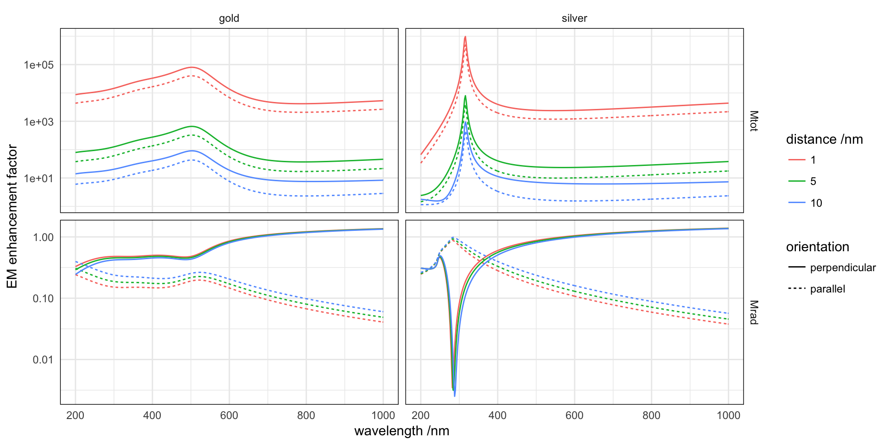

A dipole is placed near a semi-infinite air/metal interface with orientation either parallel or perpendicular to the interface.
wvl <- seq(200, 1000, by = 2)
silver <- epsAg(wvl)
gold <- epsAu(wvl)
distance <- function(d = 1, material = "silver", ...) {
material <- get(material)
dl <- dipole(d = d, wavelength = material$wavelength, epsilon = list(incident = 1^2,
material$epsilon), thickness = c(0, 0), Nquadrature1 = 1000, Nquadrature2 = 5000,
GL = FALSE, Nquadrature3 = 5000, qcut = NULL, rel.err = 0.001, show.messages = FALSE)
message(attr(dl, "comment"))
m <- melt(dl, id = "wavelength")
m$orientation <- m$variable
levels(m$orientation) <- list(perpendicular = "Mtot.perp", perpendicular = "Mrad.perp",
parallel = "Mtot.par", parallel = "Mrad.par")
levels(m$variable) <- list(Mtot = "Mtot.perp", Mtot = "Mtot.par", Mrad = "Mrad.perp",
Mrad = "Mrad.par")
invisible(m)
}Reproducing Fig. 6.1, p. 304 from Principles of Surface-Enhanced Raman Spectroscopy.
params <- expand.grid(d = c(1, 5, 10), material = c("silver", "gold"), stringsAsFactors = FALSE)
all <- mdply(params, distance)## relative integration errors were: 4.737e-05 for I1, 1.445e-03 for I2, 3.957e-01 for I3, 4.746e-04 for I4; with 195, 1455, 285, 165 respective function evaluations.## relative integration errors were: 2.144e-05 for I1, 1.397e-03 for I2, 3.314e-04 for I3, 5.414e-04 for I4; with 225, 1455, 225, 165 respective function evaluations.## relative integration errors were: 2.004e-05 for I1, 1.338e-03 for I2, 3.813e-05 for I3, 6.288e-04 for I4; with 225, 1455, 195, 165 respective function evaluations.## relative integration errors were: 1.124e-04 for I1, 1.079e-03 for I2, 4.955e-01 for I3, 6.125e-06 for I4; with 45, 495, 285, 75 respective function evaluations.## relative integration errors were: 1.115e-04 for I1, 1.068e-03 for I2, 5.417e-03 for I3, 6.078e-06 for I4; with 45, 495, 225, 75 respective function evaluations.## relative integration errors were: 1.104e-04 for I1, 1.055e-03 for I2, 5.094e-03 for I3, 6.020e-06 for I4; with 45, 495, 195, 75 respective function evaluations.ggplot(all, aes(wavelength, value, colour = factor(d), linetype = orientation)) +
facet_grid(variable ~ material, scales = "free_y") + geom_path() + labs(colour = "distance /nm",
y = "EM enhancement factor", x = "wavelength /nm") + scale_y_log10()
The total decay rates peak at the wavelength of excitation of planar SPPs (\(\varepsilon=-1\)) at the interface, they represent a non-radiative loss channel. The radiative decay rate in the upper medium has a trough at the wavelength where \(\varepsilon=0\) (\(D=0\) in the metal, by continuity \(En=0\) above the interface), therefore by virtue of reciprocity the perpendicular dipole will not emit.